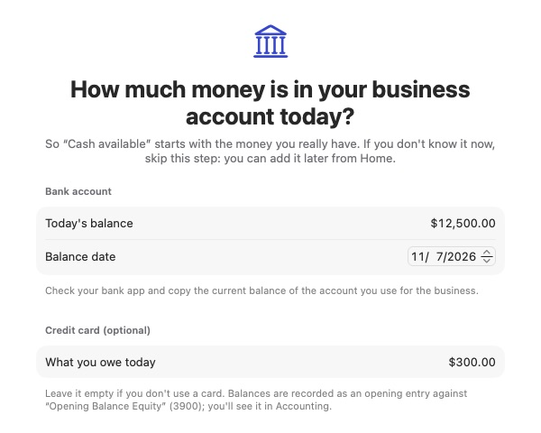
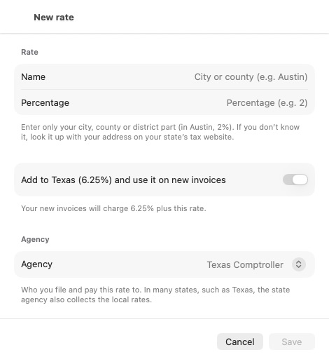

User Guide
Everything you need to keep your business books with Chirogra, step by step. You don’t need to know accounting: Chirogra makes the journal entries for you every time you invoice, get paid or pay.
- Before you start
- Set up your company
- Home
- Customers
- Invoices and payments
- Estimates
- Expenses and receipts
- Vendors and bills
- Banking
- Sales tax
- Reports
- Accounting and closing
- Settings, iCloud and backups
- Glossary
1. Before you start
Chirogra works the same on iPhone, iPad and Mac; only where things live changes:
- Mac and iPad: the sidebar, with the Business group (Home, Sales, Expenses, Banking, Reports) and the Books group (Accounting, Taxes, Settings). On the Mac, the list fills the center and the inspector on the right shows the details of what you select (show or hide it with ⌥⌘I).
- iPhone: the tabs Home · Sales · Expenses · Banking · More. Reports, Taxes, Accounting and Settings are under More. You can change the three tabs in the middle and keep your favorite tools at the top of More: go to More › Customize, or touch and hold a tool in More and choose Add to Favorites or Add to Tab Bar.
- To add something, use the + button (iPhone and iPad) or the button in the Mac toolbar (New invoice, New expense…).
- On the Mac, ⌘K opens search: customers, invoices, expenses and amounts.
The screenshots in this guide are from the Mac, with the sample data of a fictional company. Want to explore before entering your own data? On the first screen, tap Try with sample data. When you’re ready to start with your company, tap Start with my company in the notice on Home (or in Settings › iCloud, backups and security): the sample data is erased and you go back to the screen to set up your company.
You can also open this guide from the app: User Guide in Settings (on iPhone, at the bottom of More) and in the Mac’s Help menu.
2. Set up your company
The first time you open Chirogra, it asks for your company details. They appear on your invoices, and you can change them anytime in Settings › Company profile.

- Company name. Below it, App language shows the language you’re using and, with Change…, where to change it.
- Your state, which is required because it determines the sales tax you collect. When you choose it, Chirogra shows the state rate (for example, Texas rate 6.25%).
- If your city or county also charges its share, enter it in City or county and add its rate (Austin rate 2%). Chirogra adds both up in Total rate you charge (8.25%) and uses it as the tax on your new invoices. If you don’t know your city’s rate, look it up with your address on your state’s tax website; you can also add it later in Taxes.
- The start of your fiscal year and your business type (sole proprietorship, LLC, corporation…; if the name ends in “LLC”, it’s already chosen). Legal name and tax ID (EIN) are optional. Books are kept in US dollars.
- Tap Continue and choose your type of business: Professional services, Retail or store, Construction and trades, Restaurant and food, Health and wellness, or Freelancer. Chirogra uses it to set up a chart of accounts that fits your business, which you can adjust later.
- In the last step, enter the balance of the bank account you use for the business and, if you have a credit card, what you owe. It suggests today’s date: if you’re starting your books on an earlier date (for example, October 1 to record all of October), change the date and enter that day’s balance from your statement. That way Cash on hand starts with the money you really have. If you don’t know it now, tap Skip for now: you can add it later from Home.
- Tap Create company. When you finish, you can start the 14-day free trial.

The balances are recorded as an opening entry against “Opening balance equity” (3900); you’ll see it in Accounting.
3. Home
Home summarizes your business for the selected month: cash on hand, income, expenses and net income, compared with the previous month; a chart of income and expenses over the last 12 months; your accounts and the invoices you’re owed.

- Switch months with the picker at the top.
- Sales tax payable tells you how much sales tax you’ve collected and still owe your state, and by when (“Due Jan 20”). Tap it to open Taxes. If you owe nothing, it says you’re up to date.
- With a new company, Getting started walks you through what’s left to get the app ready: sales tax, bank balance, first customer, invoice, payment and expense.
- The + Expense and + Invoice buttons are shortcuts for the most common tasks.
- The bell collects your alerts: overdue invoices, bills due soon, scheduled payments, generated recurring expenses and sales tax due.
4. Customers
In Sales › Customers, add your customers with + (or New customer on the Mac). Only the name is required.

- Payment terms (for example, Net 30) and default tax: used on every new invoice for that customer.
- Exempt from sales tax: for resellers or exempt customers; their invoices carry no tax.
- The customer’s page shows their balance, what’s overdue and their open invoices, and you can keep dated notes.
5. Invoices and payments
Sales › Invoices lists all your invoices with their status (draft, issued, sent, partially paid, overdue, paid) and what you’re owed.

Create an invoice
- Tap + or New invoice.
- Choose the customer. The number, terms and due date fill in automatically.
- Add the items: product or service, quantity and price. Each line shows which income account it goes to and whether it’s taxable. Use Add line for more.
- Check the tax and the total. You can apply a discount and write a message to the customer.
- Tap Issue invoice, or Save draft if it isn’t ready yet. Preview shows the PDF exactly as your customer will see it.

When you issue it, Chirogra records the journal entry for you: accounts receivable against income and sales tax. A draft doesn’t affect your books.
If the invoice has no tax, check that a rate is chosen under Tax; if you don’t have one yet, Add Tax Rate… creates it right there.
Fix an issued invoice
As long as the customer hasn’t paid anything, an issued invoice can be fixed: open it and tap Edit (on iPad, Edit invoice in the toolbar; on the Mac, Edit Invoice… in the inspector). It keeps its number; Chirogra reverses the old entry, records the new one and notes it as Edited in its activity.
Send the invoice
From the invoice, Send Invoice… prepares an email to the customer with the PDF attached. If they’re late, Send Reminder… sends a friendly note with the balance due.

Record a payment
When the customer pays, open the invoice and tap Record Payment…:
- Total or Partial (enter the amount received; the rest stays open).
- The method (transfer, check, card…), the account you deposit to and the date.

The invoice becomes Paid or Partial and the money shows up in Banking, in the account you chose.
To change how your invoices look (color, style and logo), go to Settings › Invoice Template.
Credit memos and refunds
If you give the customer a discount or a refund on an invoice you already issued, don’t edit it: open the invoice and, under More actions, tap Credit memo (or Credit memo or refund if it’s paid). Enter the amount to credit, the reason and the date, and tap Issue. The memo lowers your income and what the customer owes; if it credits more than the balance, the rest stays in the customer’s favor for another invoice or a refund. When an invoice is settled with a payment and a memo, its details show them separately (Settled: $2,000.00 received + $400.00 credit).
6. Estimates
In Sales › Estimates you prepare quotes with the same editor as invoices and send them the same way. When the customer accepts, use Convert to Invoice:
- The whole estimate: a single invoice for the total.
- 50% deposit: invoice half; the rest stays open on the estimate.
- Choose lines: invoice the job in stages.
Below is the invoice date. Chirogra suggests the day the customer accepted the estimate (More actions › Mark as Accepted…); change it if you invoice on another day.

The invoice is created as a draft so you can review it before issuing it. The draft’s details show its date and due date: check them before you tap Issue invoice, because the sale counts in that date’s month.
7. Expenses and receipts
In Expenses you record what you pay on the spot: supplies, gas, software… Tap + or New expense.

- Receipt: drag in a photo or a PDF, or use Choose photo / Choose File…. It’s stored with the expense; the IRS asks you to keep it.
- Amount and date. Tax included starts at $0: it’s for your information only, because in the U.S. the sales tax on your purchases is part of the expense. If the receipt breaks out the tax, enter it or tap Calculate with… (your company’s rate). Rent, insurance and services usually don’t have it. If you scan a receipt, Chirogra fills in the tax it finds.
- Vendor: pick one from the list or create one with New vendor…. For a one-off purchase, leave it at None and type who you paid in Paid to.
- Category (the expense account), the payment account (where the money came from) and the payment method, which depends on the account: from the bank, debit card, transfer or check; from the credit card, credit card; from cash, cash.
- Optional: a customer or project if you’ll bill it back, and Split across categories when one purchase mixes things.
- Save expense, or Save and new to keep going.
- The Only without receipt checkbox shows what still lacks a receipt.
- Editing a recorded expense doesn’t erase anything: Chirogra reverses the old entry and records the new one, and you’ll see it in its history. If the expense is already reconciled with the bank and you only change the category (or the vendor, or the note), the reconciliation isn’t touched. If you change the amount, the date or the payment account, Chirogra warns you first, because that does change what was reconciled.
- Buying equipment (a computer, a machine, a vehicle): record it like any expense, but under Category choose an account from the Equipment & prepaid purchases group (for example, 1500 · Equipment). That way it’s an asset of the business, not an expense of the month; your accountant decides how to depreciate it.
- Recurring (button at the top): payments that repeat, like a subscription or rent. With autopay they’re recorded automatically on the date; without it, they wait for you to confirm the amount.
8. Vendors and bills
When a vendor sends you a bill you’ll pay later, record it in Expenses › Bills to pay with New vendor bill. That way you know how much you owe and when it’s due. The due date comes from the vendor’s terms and moves with the bill date; you can change it by hand.

- Record Payment… when you pay it: choose the account, method and date.
- Schedule a payment: Chirogra reminds you on the chosen date (the money moves from your bank, not from the app). You can change or cancel it.
- Batch payment: check several bills in the first column and pay them together from one account.

In Expenses › Vendors you keep their details, payment terms, usual category, whether they need a 1099 and their W-9. Their page shows what you spent this year and what you owe, and tells you when you need to send them a 1099-NEC.
9. Banking
Banking shows your accounts (checking, savings, credit card) with their book balance and each month’s transactions: customer payments, bill payments, expenses and transfers.

- Transactions are created automatically when you get paid, pay bills and record expenses.
- Cash on hand, on Home, adds up cash and bank accounts and subtracts what you owe on cards (it says so under the figure). That’s why it can be lower than the cash in the cash flow report, which doesn’t subtract cards.
Import your bank statement
- Download the month’s statement from your bank’s website as CSV or OFX/QFX.
- In Banking, open the account and tap Import Statement. Choose the file. With a CSV, Chirogra guesses the columns (date, description, amount) and lets you fix them; next time it remembers them. Importing the same file twice doesn’t duplicate anything.
- New transactions wait in To Review. For each one, Chirogra suggests what to do:
- Match it with something you already recorded (a payment, an expense, a bill payment). That’s the usual case if you keep your invoices and expenses up to date.
- Categorize: create the missing expense or income, with its category.
- Transfer: money between your own accounts (for example, the credit card payment).
- Exclude: anything that isn’t business or is a duplicate.
- With Rules you teach Chirogra to categorize what repeats (the bank fee, a subscription).
Reconcile
Reconciling means checking, statement in hand, that your books and the bank agree. Tap Reconcile, enter the statement date and its ending balance (for a credit card, the balance owed per statement) and check off the items that appear on it. Matched items are already checked. When the difference reaches $0.00, tap Finish Reconciliation. The account shows Reconciled through that date, and the next reconciliation starts where this one ended.
Move money between accounts, pay the card or take money out
These aren’t expenses or income. If they’re on the statement, use Transfer in To Review. To record them by hand, go to More › Accounting › Journal entries › New journal entry and choose:
- I moved money between my accounts: a transfer to savings or the credit card payment (from checking to the card).
- I took money out of the business for myself: an owner’s draw.
- I put my own money into the business: a contribution.
You just choose the accounts, the amount and the date; Chirogra puts each amount on the right side.
10. Sales tax
In Taxes you see how much sales tax you collected this quarter, what you’ve paid, the balance due and the date to pay your agency.

- Rates by jurisdiction: your state’s rate is there from the moment you set up the company. A combined rate adds several together (in the sample, Austin, TX = 6.25% state + 1% city + 1% transit). You enter local rates yourself: confirm them with your state’s agency.
- Add your city or county rate (if you didn’t when you set up the company): tap +, enter the name and only the local part (in Austin, 2%). With Add to Texas (6.25%) and use it on new invoices, Chirogra creates the combined rate and makes it the default. The agency is already chosen: in many states, such as Texas, the state agency also collects the local rates.
- New invoices: the default tax each invoice gets, whether your prices include tax, and sales sourcing.
- Record tax payment when you pay the agency; it’s listed under Payments to the agency.
- View report opens the sales tax report, handy for your return.

11. Reports
Reports has what your accountant or tax preparer asks for:
- Profit and loss (income, costs, expenses and net income).
- Balance sheet (what you own, what you owe and your equity).
- Trial balance.
- Receivables aging and payables aging (who owes you and whom you owe, by days).
- Sales tax.

Choose the period (month, quarter, year or custom dates) and compare it with the previous one using Vs. previous. Tap a row to see its details or open it in the general ledger. Export creates a PDF or a CSV to send or open in a spreadsheet.
12. Accounting and closing
You don’t need this section day to day; it’s there for your accountant or when you want the details.
- Chart of accounts: all your accounts, grouped (assets, liabilities, equity, income and expenses). You can add accounts and sub-accounts, rename them or archive the ones you don’t use.
- Journal entries: every entry, automatic and manual. New journal entry asks what you want to record: I put my own money into the business, I took money out of the business for myself, I moved money between my accounts or Manual entry, for your accountant. For the first three you only choose the account and the amount, and Chirogra puts each amount on its side (How it goes in your books). In a manual entry, debits must equal credits.
- General ledger: each account’s transactions with its running balance.

Recorded entries are never deleted or changed: to fix one, it’s reversed and the correct one is recorded. That way your books always balance and every change leaves a trail.
Period close
Once you’ve reviewed a month (or handed it to your accountant), close it in Accounting › Period close so nobody changes it by mistake. Chirogra first shows you a checklist (invoices issued, expenses recorded, missing receipts, sales tax).

- Choose the new closing date and tap the month’s Close button (for example, “Close October 2026”). If you don’t have a closing password yet, Chirogra offers Set Password and Close or Close without password.
- With a closing password, nobody can reopen a period or record with a closed date without typing it. We recommend it if someone else uses the app or you’ve already handed the month to your accountant.
- If something falls in a closed month (a receipt that arrived late), Chirogra offers to Record on the first open day, which is the usual practice and doesn’t change reports you already delivered. To record it with its own date, type the closing password or, without one, the reason, which stays in the change log.
- The closing history keeps every close and reopening.
13. Settings, iCloud and backups
- Company profile: the name, address, contact details and tax ID on your invoices.
- Invoice Template: color, style (classic or compact) and logo, with a preview.
- Currency and formats.
- iCloud, backups and security: sync, backups and locking with Face ID or Touch ID.

Your books on all your devices
Turn on Sync with iCloud and reopen the app. Your books travel encrypted in your private iCloud account between your iPhone, iPad and Mac.

Backups
Back Up Now saves your books, receipts included, in a .chirogra file you can keep
anywhere: Files, iCloud Drive or a USB drive. Restore from Backup… brings it back on any device with
Chirogra; before restoring, Chirogra saves a copy of what you had, and you can go back with Undo Last
Restore.
Make a backup now and then, especially before closing the year.
14. Glossary
What each Chirogra menu is and what it's for, in a few words. At the end are the accounting words you'll see in the app. On iPhone, Reports, Taxes, Accounting and Settings are under More.
Home
- Home
- Your business at a glance: the cash you have, what you earned and spent this month, what customers owe you and what you owe. Use it to see how you're doing without opening a report.
- Getting started
- A checklist to get the app ready (company, sales tax, bank, first customer, invoice, payment and expense). Each step takes you where it's done. Hide it when you're finished.
- Sales tax payable
- How much sales tax you collected and still owe your state, and the deadline. It takes you to Taxes.
- Notifications (the bell)
- What needs your attention: overdue invoices, scheduled payments, recurring expenses to confirm.
- Quick actions
- Buttons to create an invoice, an expense or a customer without looking for the menu.
Sales
- Invoices
- The bills you send your customers. Here you create, issue and send invoices and record the payments you receive.
Each invoice moves through statuses:
- Draft: not in your books yet; change it freely.
- Issued: counts as income, and the customer owes you the money.
- Sent: issued, and you've also emailed it to the customer.
- Partially paid: the customer paid part of it.
- Overdue: past its due date and still unpaid.
- Paid: fully collected; the money is in your bank.
- Void: canceled; it no longer counts but stays in the history.
- Estimates
- A quote for a customer. It isn't in your books. When the customer accepts, turn it into an invoice (in full, a deposit or in parts).
- Customers
- The people or companies you sell to: contact details, payment terms, tax and your notes. Their page shows what they owe you.
- Record payment
- Notes that the customer paid you (all or part), how they paid and which account the money went into.
- Credit memo
- A discount or refund on an invoice you already issued. It lowers what the customer owes without deleting the invoice.
- Reminder
- An email reminding the customer about an unpaid invoice.
- Invoice template
- How your PDF invoices look: color, style and logo (in Settings).
Expenses
- Expenses
- What you already paid for your business: materials, gas, advertising, services. Each expense has a category and, if you like, a photo of the receipt. Expenses lower your profit.
- Payables (bills to pay)
- Bills your vendors send you that you'll pay later. You can schedule a payment or pay several at once.
- Recurring
- Expenses that repeat (rent, insurance, a subscription). Create them once and Chirogra records them every month, automatically or after you confirm.
- Vendors
- The people or companies you buy from. Keep their W-9 and preferred payment method; Chirogra tells you when you need to send them a 1099-NEC.
- Category
- The kind of expense (materials, insurance, advertising…). It lets the profit and loss report show where your money goes.
- Split across categories
- Divides one receipt among several kinds of expense, such as materials and tools in the same purchase.
- Tax included
- The sales tax you paid on a purchase. Chirogra works it out with your company's rate and you can change it. It's for your information: in the U.S. it's part of the expense.
- Customer or project
- Links an expense to a customer or a job, for example to bill it to them later.
Banking
- Banking
- Your bank, cash and credit card accounts, with their balance and each month's transactions. Compare it with your bank to make sure nothing is missing.
- Book balance
- The balance according to what you've recorded in Chirogra. It can differ from the bank if something isn't recorded yet or a check hasn't cleared.
- Import Statement
- Brings your bank’s transactions in from a CSV or OFX file so you can review them in Chirogra.
- To Review
- Imported transactions you haven’t matched, categorized or excluded yet.
- Reconcile
- Checking against the statement, item by item, that your books and the bank agree, until the difference is $0.00.
Reports
- Profit and loss
- How much you sold, spent and earned in a period. Also called the income statement or P&L.
- Balance sheet
- A snapshot of your business on a date: what you have, what you owe and what's yours (equity).
- Trial balance
- Every account's balance in one list. Your accountant uses it to check that the books balance.
- Receivables aging
- Who owes you and for how many days. Use it to decide whom to collect from first.
- Payables aging
- Whom you owe and for how many days.
- Sales tax
- The sales tax you collected in the period, by rate. Use it for your return.
- Export
- Saves the report as a PDF (to send) or a CSV (for a spreadsheet).
Accounting
- Chart of accounts
- The list of every “bucket” Chirogra sorts your money into: banks, what you're owed, what you owe, your income and each kind of expense. It comes ready for your type of business; you can add or archive accounts.
- Journal entries
- The accounting record of each transaction. Chirogra makes them for you when you invoice, collect or pay. Use New journal entry for anything else: an owner contribution or draw, a transfer between accounts or an adjustment your accountant asks for.
- General ledger
- Every transaction in one account, with the balance after each one.
- Period close
- Closes a month or year you've reviewed so nobody changes it by mistake. You can protect it with a closing password; without one, recording something with a closed date asks for a reason.
Taxes
- Summary
- How much sales tax you collected this quarter, how much you owe your state and when it's due. Record the payment there when you make it.
- Rates
- The sales tax percentages you charge: your state's and, if it applies, your county's or city's. With New rate you add the local part and Chirogra adds it to the state rate.
- Combined rate
- The sum of the rates charged together on a sale. For example, Austin, TX: 6.25% state + 2% local = 8.25%.
- Default tax
- The rate new invoices use unless you choose another.
- Agency
- The government office you pay sales tax to (in Texas, the Texas Comptroller).
- Prices include tax
- Turn it on if your prices already include the tax; Chirogra separates it when you issue the invoice.
- Filing frequency
- How often you file and pay sales tax: monthly, quarterly or yearly, as your state assigns.
Settings
- Company profile
- The name, address, type of company and tax ID that appear on your invoices.
- iCloud, backups and security
- Syncs your books across your devices, creates or restores a backup and locks the app with Face ID or Touch ID.
- Subscription
- Your Chirogra plan. If it lapses, you can still see your books and make backups, but you can't record anything new.
- Start with my company
- Shown while you use the sample data: deletes it and takes you to set up your company.
- Customize (iPhone)
- Under More. Tabs chooses which three tools go between Home and More in the bottom bar (for example, Journal entries or a report) and in what order; Favorites puts the ones you use now at the top of More. It's saved only on that device, and Reset Tab Bar goes back to the usual.
Accounting words
- Asset
- What your business has: money in the bank, what you're owed, equipment and vehicles.
- Liability
- What your business owes: credit cards, loans, vendor bills, sales tax you collected and haven't paid yet.
- Equity
- What belongs to the owner: what you put in plus what the business has earned, minus what you've taken out.
- Income
- What you sell. In Chirogra it counts when you issue the invoice, even before you're paid.
- Profit and margin
- Profit = income − expenses. Margin is profit as a percentage of sales.
- Accounts receivable
- Money your customers owe you on issued invoices.
- Accounts payable
- Money you owe your vendors.
- Journal entry
- The record of a transaction in your books. It always touches two or more accounts: money leaves one and goes into another.
- Debit and credit
- The two sides of every entry. They must add up to the same amount, which is why the books always balance. Chirogra fills them in for you.
- Opening balance
- The money you already had (or owed) on the day you started using Chirogra.
- Reversal
- An entry that undoes another. This is how Chirogra corrects what's already in your books: it reverses the old entry and records the right one, and both stay in the history.
- Taxable and exempt
- Taxable: sales tax applies. Exempt: it doesn't (for example, a customer with a resale certificate).
- Sales tax
- The tax you collect from customers on behalf of your state. It isn't yours: you hold it and pay it to the agency.
- Terms (Net 30)
- How many days the customer has to pay you. “Net 30” = 30 days from the invoice date.
- Fiscal year
- The 12 months of your accounting year. For most small businesses it's January to December.
- EIN
- Your company's tax ID number with the IRS.
- W-9 and 1099-NEC
- The W-9 is the form with a vendor's tax details. You use it to fill out the 1099-NEC, which you send to each contractor you paid $2,000 or more in the year (from 2026).
Need help?
See the frequently asked questions (subscription, canceling, what happens if you stop paying) or email us at soporte@chirogra.com.